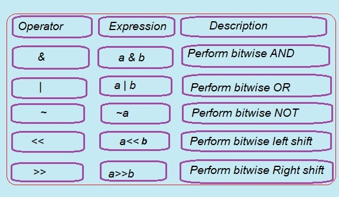

Let us learn The Bitwise Operators:
Bitwise operations are fast and simple,basic to higher-level arithmetic operations and directly supported by processor.
Bitwise operations are faster than normal addition,subtraction,multiplication and division.
Lets learn bitwise Operators one by one.
1. & Bitwise AND Operator
Bitwise AND operator is denoted by the single ampersand sign (&). Two integer operands are written on both sides of the (&) operator. If the corresponding bits of both the operands are 1, then the output of the bitwise AND operation is 1; otherwise, the output would be 0.
Truth table for bitwise operators
Bitwise Operators in C Language
In this article, we are discussing the Bitwise operators and their types. Here, we will discuss all types of Bitwise operators used in C programming language.
.
Bitwise operators in c programming are the special type of operators are generally used to perform operation on the at data bit level.When the operations perfomed on bit level then it is called bit level programming.
In the arithmetic-logic unit (which is within the CPU), mathematical operations like: addition, subtraction, multiplication and division are done in bit-level.
C language use following types of Bitwise operators:
1. & Bitwise AND Operator.
2. | Bitwise OR Operator.
3. ^ Bitwise Exclusive OR Operator.
4. << Bitwise Left shift Operator.
5. >> Bitwise Right Shift Operator.
6. ~ One's Compliment Operator.
a b a&b a|b a^b
----------------------------
0 0 0 0 0
----------------------------
0 1 0 1 1
----------------------------
1 0 0 1 1
----------------------------
1 1 1 1 0
for example,
We have two variables a and b.
a = 5;
b = 3;
The binary representation of the values of the two variables 5 and 3 is below:
a = 0101
b = 0011
On performing the bitwise AND operation on the above two variables, that is, a&b, the output will be
Result = 0001
From the output above, one can see the matching of the bits of the two variables one after the other. If it is 1 in both variables, the output is 1; otherwise, 0.
C Program to show working of Bitwise AND & Operator
#include <stdio.h>
int main()
{
int a=5, b=3,c; /* integer variable declarations */
c=a&b;
printf("The output of the Bitwise AND operator a&b is %d",c);
return 0;
}
Output:
The output of the Bitwise AND operator a&b is 1
In the above code, we have created and initilized three integer variables, i.e., a=5, b=3 and c=0 respectively.
The binary value of 'a' and 'b' are 0101 and 0011, respectively. When we apply the AND operator between these two variables,
a & b = 0101 && 0011 = 0001
>), and one's complement (~)">
Bitwise Operator Example
| a | b | a&b | a|b | a<<b | a>>b |
|---|---|---|---|---|---|
| 5 | 3 | 1 | 7 | 40 | 0 |
2. | Bitwise OR Operator
The bitwise OR operator is represented by a single vertical sign (|). Two integer operands are written on both sides of the (|) symbol. If the bit value of any of the operand is 1, then the output would be 1, otherwise 0.
The result upon applying bitwise OR | becomes 1 if any one of of the operands bit value is 1 . Otherwise, it returns 0 as the value.
This type of operator returns 1 even when both or even one of the operand bit is 1 otherwise return 0. For instance, the p | q will return 1 when both or one of p and q bit value is 1.
Syntax: (var1 | var2)
e.g. If c = 5 and d = 2 then, expression c|d equals to 7.
C Program to show working of Bitwise OR | Operator
#include <stdio.h>
int main()
{
int a=5, b=3,c=0; /* integer variable declarations */
c=a|b;
printf("The output of the Bitwise OR operator a|b is %d",c);
return 0;
}
Output:
The output of the Bitwise OR operator a|b is 7
In the above code, we have created and initilized three integer variables, i.e., a=5, b=3 and c=0 respectively.
The binary value of 'a' and 'b' are 0101 and 0011 respectively. When we apply the OR operator between these two variables,
a | b = 0101 && 0011 = 0111
3. Bitwise XOR Operator ^
Bitwise XOR (exclusive OR) ^ is an Operator in C Programming language that provides the answer 1 (true) if both of the bits in the operands are different .
If both of the bits are same then XOR (^) Operator gives the result 0(false).
The XOR Operator It is denoted by the Symbol ^.
Let us understand how XOR ^ Operator work by using Following example.
10 = 00001010 (In Binary)
12 = 00001100 (In Binary)
Bitwise XOR Operation of 10 and 12
00001010
^
00001100
________
00000110 = 6 (In decimal)
Example : Bitwise XOR
C Program to show working of Bitwise XOR ^ Operator
#include <stdio.h>
int main()
{
int a = 10, b = 12;
printf("Result after using xor ^ Operator= %d", (a ^ b));
return 0;
}
Output
Result after using xor ^ Operator= 6
4. Bitwise Left Shift Operator <<
Bitwise Left shift operator is the logical bitwise and binary operator in C Programming.It is called binary operator because this operator operates on two positive integral Operands.
It shifts all bits towards left by a certain number of specified bits. The bit positions that have been vacated by the left shift operator are filled with 0. The symbol of the left shift operator is <<.
Syntax: Operand << n
Where,
Operand is an integer expression on which we apply the left-shift operation.
n is the number of bits to be shifted.
Here n number of bits will be shifted to left side.
The 'n' bits on the left side will be popped out, and 'n' bits on the right-side are filled with 0.
For example,
Suppose we have a statement:
int a = 5;
The binary representation of 'a' is given below:
a = 0101
One thing we need to keep in mind that when we shift 1 bit Postion to the left then it becomes double and becomes half(neglects the fractional part) when shifted to right.
If we want to left-shift the above representation by 2 to left, then the statement would be:
a << 2;
0101<<2 = 00010100
Binary number 00010100 is 20 in decimal.
5. Bitwise Right Shift Operator >>
Bitwise right shift operator is the logical bitwise and binary operator in C Programming.It is called binary operator because this operator operates on two positive integral Operands.
It shifts all bits towards right by a certain number of specified bits. The symbol of the right shift operator is >>.
When ever we perform this operation on an integer a with integer b the result obtained after always equal to division of 2^b.
For example 1.
a=40
b=1
a=a>>b
thus the result obtained will be 20.
a/2^1 ---> 40/2--->20
For example 2
Suppose we have a statement:
int a = 5;
The binary representation of 'a' is given below:
a = 0101
One thing we need to keep in mind that when we shift 1 bit Postion to the right then it becomes half (neglects the fractional part)
If we want to shift the above representation by 1 to right, then the statement would be:
a >> 1;
0101>>1 = 00000010
Binary number 00000010 is 2 in decimal.
6. Compliment Operator ~
Bitwise Complement Operator ~ also called One's Compliment Operator ~ . It produce a bitwise one's complement of it's operand.
Bitwise complement operator is a unary operator (works on only one operand). It changes 1 to 0 and 0 to 1. It is denoted by ~.
35 = 00100011 (In Binary)
Bitwise complement Operation of 35
~ 00100011
________
11011100 = 220 (In decimal)
The bitwise complement of 35 (~35) is -36 instead of 220, but why?
For any integer n, bitwise complement of n will be -(n + 1). To understand this, you should have the knowledge of 2's complement.
2's Complement
Two's complement is an operation on binary numbers. The 2's complement of a number is equal to the complement of that number plus 1
The bitwise complement of 35 is 220 (in decimal). The 2's complement of 220 is -36. Hence, the output is -36 instead of 220.
Bitwise Complement of Any Number N is -(N+1).
Here's how:
bitwise complement of N = ~N (represented in 2's complement form)
2'complement of ~N= -(~(~N)+1) = -(N+1)
C Program to demonstrate Working of Bitwise Operator.
/*This C program that shows how Bitwise &,|,~,^,>>,<< operators works.< */br>
#include <stdio.h>
int main()
{
/* a = 5 binary of 5 is 00000101
b = 9 binary of 9 is 00001001 */
unsigned char a = 5, b = 9;
printf("a = %d, b = %d\n", a, b);
printf("a&b = %d\n", a & b);
printf("a|b = %d\n", a | b);
printf("a^b = %d\n", a ^ b);
printf("~a = %d\n", a = ~a);
printf("b<<1 = %d\n", b << 1);
printf("b>>1 = %d\n", b >> 1);
return 0;
}
Output:
a = 5
b = 9
a&b = 1
a|b = 13
a^b = 12
~a = -6
b<<1 =18
b>>1 = 4
Program Explanation:
In this program, we have declared and initialized two variables, a = 5 and b = 9.
Let's break down the code and explain the results step-by-step.
Initial Values:
a = 5
In binary, a is represented as 00000101.
b = 9
In binary, b is represented as 00001001.
Now, let's explore how different bitwise operators work with these two values.
1. Bitwise AND (a & b)
Result: a & b = 1
The bitwise AND operator compares the corresponding bits of two numbers. For each position, the result is 1 if both bits are 1; otherwise, the result is 0.
Let's break down how the operation a & b = 1 works:
a = 00000101
b = 00001001
Now, let's perform the AND operation:
a = 00000101
b = 00001001
----------------
a & b = 00000001 (which is 1 in decimal)
So, the output of a & b is 1.
Note:
The AND operation produces a 1 only when both bits in the corresponding positions are 1. Otherwise, the result is 0.
2. Bitwise OR (a | b)
Result: a | b = 13
The bitwise OR operator compares the bits of two numbers. For each bit position, the result is 1 if at least one of the corresponding bits is 1; otherwise, the result is 0.
Let's see how the operation a | b = 13 works:
a = 00000101
b = 00001001
Performing the OR operation:
a = 00000101
b = 00001001
----------------
a | b = 00001101 (which is 13 in decimal)
So, the output of a | b is 13.
Note:
The OR operation produces a 1 if at least one of the bits in the corresponding positions is 1.
3. Bitwise XOR (a ^ b)
Result: a ^ b = 12
The bitwise XOR operator compares two bits and returns 1 if the bits are different, and 0 if they are the same. This operation is quite useful for tasks such as flipping bits.
Let's explore how a ^ b = 12 works:
a = 00000101
b = 00001001
Performing the XOR operation:
a = 00000101
b = 00001001
----------------
a ^ b = 00001100 (which is 12 in decimal)
So, the output of a ^ b is 12.
Note:
The XOR operation produces a 1 if the corresponding bits are different and a 0 if they are the same. It's like comparing two bits and flipping the result based on their inequality.
4. Left Shift (b << 1)
Result: b << 1 = 18
The left shift operator (<<) shifts the bits of a number to the left by a specified number of positions, filling the vacant positions on the right with zeros. This operation essentially multiplies the number by 2 for each shift.
Let's see how b << 1 = 18 works:
b = 00001001 (which is 9 in decimal)
When we shift the bits of b one position to the left, we get:
b = 00001001
After shifting left:
b << 1 = 00010010 (which is 18 in decimal)
So, the output of b << 1 is 18.
5. Right Shift (b >> 1)
Result: b >> 1 = 4
The right shift operator (>>) shifts the bits of a number to the right by a specified number of positions, discarding the bits that are shifted out, and filling the vacant positions on the left with zeros.
Let's see how b >> 1 = 4 works:
b = 00001001 (which is 9 in decimal)
When we shift the bits of b one position to the right, we get:
b = 00001001
After shifting right:
b >> 1 = 00000100 (which is 4 in decimal)
So, the output of b >> 1 is 4.
Previous Topic:-->> Logical Operators || Next topic:-->>? ,* ,&,sizeof() Operators